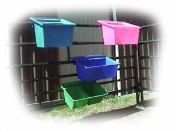

| The Promold Fenceline Feeders are
a
reinforced molded plastic feed trough, designed to hang on a plank or steel
panel
preventing livestock from tipping them over. They are designed for small pen feeding, and are especially suited for
feeding horses or 4-H calves in pens. The feeders are also suitable for holding water,
salt or mineral. Promold
Fenceline Feeders are available in a wide range of sizes and colors.
For more information contact Promold
Marketing.
Return to Feeding Equipment
Nifty Livestock Equipment Ltd.
1999-2005
About Nifty / Feed Equipment / Livestock ID / Handling Equipment / Dealers Page / Contact Us
|